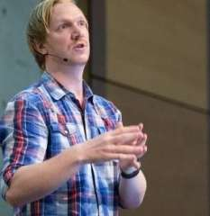
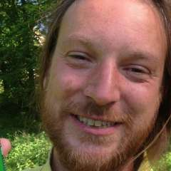
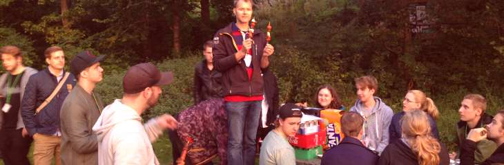
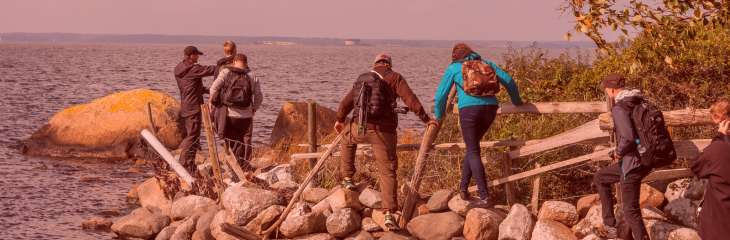

GrillCon 2018 Vår - Hackathon och Konferens
Vårens GrillCon går av stapel torsdag till lördag den 17-19 maj, 2018.
Det blir Hackathon följt av barhäng, Konferens med seminarier, Grill med aktiviteter samt Utflykt.
#Övergripande planering
Det övergripande schemat ser ut så här.
| Dag | Tid | Vad händer? |
|---|---|---|
| Torsdag | 09-10 | Samling inför Hackathon |
| 10-17 | Hackathon | |
| 18- | The Fox & Anchor, med eller utan karaoke | |
| Fredag | 09-10 | Hackathon frukost |
| 10-15 | Konferens med seminarier och presentationer | |
| 15-17 | Samtal, fika, hacka (track 1) och öppen kårpub (track 2) | |
| 17- | Traditionell Grill med aktiviteter | |
| 17-23 | Kårpuben håller extra öppet för GrillCon gäster | |
| Lördag | 09-14 | Utflykt i Foto- och Fritidsklubbens regi |
#Hackathon
Plats H429 och H430 klockan 9-17.
Under dagen förekommer presentationer, planerade och spontana. Det finns team som har annonserat sitt fokus för dagen och man kan anmäla sig till teamledaren för att delta i teamet.
#Presentationer
Följande presentationern är grovt inplanerade. Eventuellt tillkommer spontana tillägg efter hand som inspirationen blomstrar.
| Tid (ish) | Fokus |
|---|---|
| 14 | Mikrooptimeringar för vardagen i terminalen I (Mikael) |
| 15 | Mikrooptimeringar för vardagen i terminalen II (Daniel) |
Presentationerna är korta, 10 minuter.
#Team
Följande team kommer att verksamhet under dagen.
| Team titel | Teamledare |
|---|---|
| BITS webbsida | Martin “ocpu” Hövre |
| CSS usability hack contest | Vidar “Lenore” Tedenbrant |
| Programmera spel i JavaScript/Canvas i webbläsaren | Mikael “mos” Roos |
Tanken är att varje team har ett fokus att leverera innan dagen är slut. Eventuellt blir det spontana presentationer av dagens resultat, innan vi går hem.
#Konferens och Seminarier
Plats: Sal J1640.
Konferensdelen pågår 10-15 med paus för lunch klockan 12-13.
Följande är schemat för seminarierna.
#10:00 Teknologi-snick-snack
Tanken är kort-korta presentationer som följer en gemensam form likt Pecha kucha. Om vi efterliknar pecha kucha upplägget så gäller 20 slides á 20 sekunder (6 minuter och 40 sekunder) följt av frågor, efter 10 minuter är det nästa talare.
Gongongen ringer högt när tiden gått ut.
Presentatörer äro följande.
| Presentatör | Typ | Titel |
|---|---|---|
| Marcus Gustafsson | Pecha kucha | p5.js - libb för att koda grafik på canvas. |
| Peder Tornberg | Pecha kucha | Distribuerade små team i global software engineering. |
| Andreas o Kenneth | Pecha kucha | Comparison and Prediction of Temporal Hotspots |
#11:00 Eiffel - CI/CDD på stor skala

Magnus
Magnus Aronsson jobbar som systemutvecklare på Tieto i Umeå och har ett stort intresse för CI/CDD och distribuerade system.
Magnus berättar så här om sitt seminarie.
Eiffel är en standard för maskin-till-maskin kommunikation och ett antal implementationer av den standarden som tillsammans skapar ett meddelande-drivet Continuous Integration/Delivery/Deployment system. Detta ger team möjlighet att automatiskt sända meddelanden med information som andra team kan ha nytta av och en gemensam vokabulär att använda i denna kommunikation. Exempelvis kan team istället för vattenfall och överlämningar automatiskt uttala sig om kvalitén på varje commit och tillåta nedströms beroenden själva avgöra när de vill ta in en ny version.
I denna presentation ges ett par exempel på användningsfall för Eiffel.
Magnus har gått ett av kurspaketet och har en examen från Umeå Universitet i systemvetenskap. Magnus är en hängiven dbwebbare och känd som ceruza i IRC:n. Läs mer om Magnus på LinkedIn eller läs Magnus’ artikel på dbwebb som handlar om “Flux med Redux och React”.
#13:00 C#


Filip
Filip Ekberg är konsult på fekberg AB och författare till boken C# Smorgasbord.
Så här säger Filip om sitt seminarie.
Mycket har hänt de senaste 18 åren sedan C# först visades upp, vad är det egentligen som gör att programmeringsspråket är ett av de mest använda och omtyckta på marknaden? Låt oss titta på nya, och några gamla, språk-features som gör en C#-utvecklares vardag enklare och roligare att jobba i. Jag är C# utvecklare i grund och botten, jobbar dagligen med språket – men jag sitter inte i Windows-miljö! Hur funkar det? Låt oss prata om hur C# möjliggör utveckling på vilken platform som helst!
Filip gick ut SE-programmet vid BTH för 10 år sedan och har sedan dess gjort karriär som internationell programutvecklare, skribent och talare på konferenser. Läs mer om Filip på LinkedIn eller i dbwebb-artikeln “Fråga Filip Ekberg om livet som egenkonsult”.
#14:00 Flexa CSS med Bäck

Oscar
Oscar Bäck brinner för frontend-utveckling och kommer att hålla en presentation för att ge oss insikter i design, layout och positionering med Flexbox i CSS3.
Så här säger Oscar om sitt seminarie.
Innan flexbox kom med CSS3 har vi fått nöja oss med bland annat position och float. Även om dessa (i alla fall position) fortfarande fyller sina funktioner, så är flex ett nytt sätt att hantera objekt mer flexibelt (no pun intended) på sidan.
Tanken med detta seminarie är att introducera tänket med Flex och visa vissa finesser som du enkelt kan applicera i dina egna projekt.
Kanske även rekrytera en och annan backendare till frontend?
Läs mer om Oscar på LinkedIn.
#14:30 Problemet är lösningen


Charlie
Charlie Svahnberg besöker oss och delar med sig av sina erfarenheter från en lång karriär som programvarutekniker. Charlie är en av de första programvarutekniker som examinerades från BTH, hans studentakronym är pt91cs.
Charlie är konsult på firman HLL och jobbar främst med IT (nätverk, switchar, routrar och annat som gör att nätet fungerar).
Så här säger Charlie om sitt seminarie.
Smaka på titeln, “Problemet är lösningen”, “en filosofisk betraktelse kring hur duktiga tekniker får lov att förbli duktiga tekniker”, typ. Kräver nog lite mer tanke, men.
Charlie är hemlighetsfull, men vi kan räkna med att han levererar. Charlie har som tekniker en lång och gedigen erfarenhet av att hantera chefer och management ur olika aspekter så att de gör ett gott jobb. Vi ser fram emot hans besök och att få dela hans erfarenheter.
#Klassisk Grill


Grillspett i sann spiritualistisk anda.
Traditionell grill med förrätt, varmrätt, efterrätt och snacks.
Kårpuben har extra öppet 15-17 inför grillen. Externa gäster måste finnas anmälda på en gästlista.
Förhoppningsvis har någon hackat och preppat inför grillspetten. Har vi ännu mer tur har någon handlat och det finns en grill som vi kan låna och någon som bär den till grillplatsen.
Under kvällen sker bland annat följande:
- Riktigt svår tipspromenad.
- Statusuppdatering för WM i Arkadbyggeri 2018.
- Resultat och priser för WM i Uptime 2017/2018.
- Notis om startskott för WM i Uptime 2018/2019.
Kåren har extra öppet i puben till klockan 23 i anslutning till grillen.
#Utflykt med Foto- och Fritidsklubben


Höstutflykten 2017 gick till Tjurkö.
Utflykten pågår ungefär mellan 09-14. Plats för starten meddelas senare tillsammans med fler detaljer om dagen.
Utflykten arrangeras av dbwebb’s Foto- och Fritidsklubb. Det blir ett hemligt resmål som innebär enklare vandring/promenad bland sevärdheter och natur. En halvdagsutflykt i (hav), skog och mark i all enkelhet. Ta med egen matsäck, kläder för väder och en kamera om andan faller på.
Ta gärna med en kompis.
Våren 2017 gick utflykten till Aspö och hösten 2017 var vi på Tjurkö.
Missa inte fotoklubbens permanenta utställning utanför (och i) labbsalarna H429/H430. Där visas bilder upp från tidigare utflykter och andra händelser. Premiär och vernissage är planerad till Hackathonet.
#Hitta hit
Här är vi.
#Parkera vid BTH
Det är fri parkering men du behöver ett parkeringskort att lägga i framrutan. Du kan hämta parkeringskortet i receptionen, byggnaden som ser ut som en rund badtunna i trä i extra stort format.
#Revision history
- 2018-03-29: (A, mos) Inför GrillCon 2018 vår.